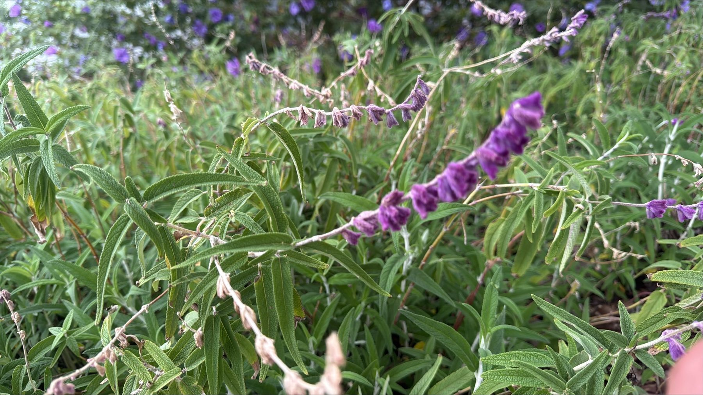
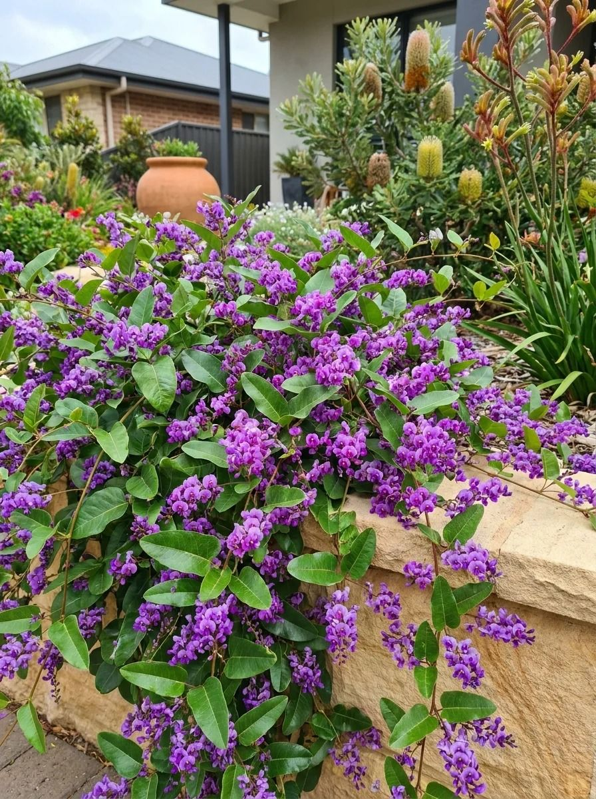
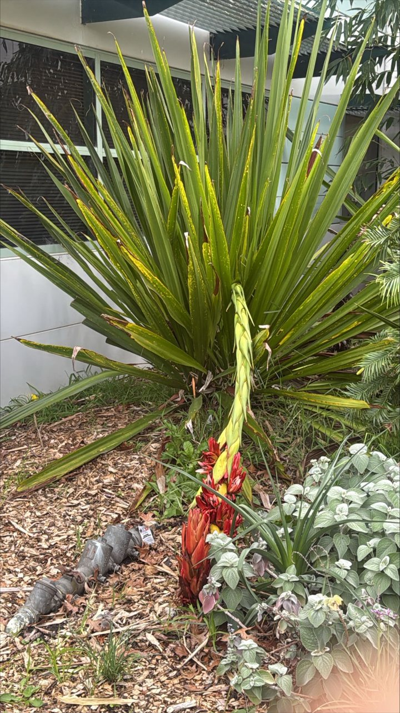
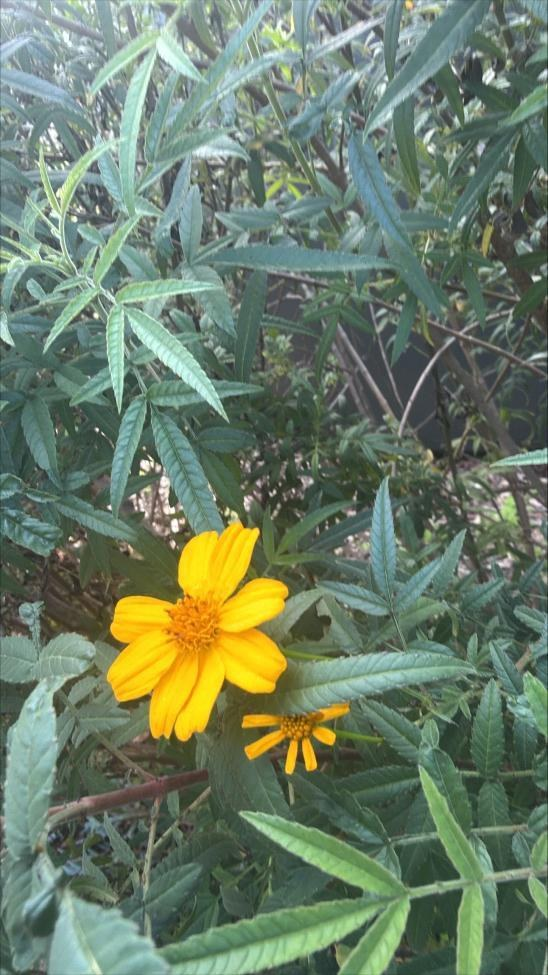
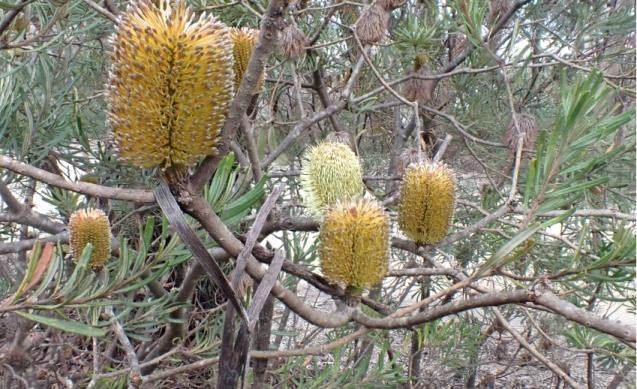
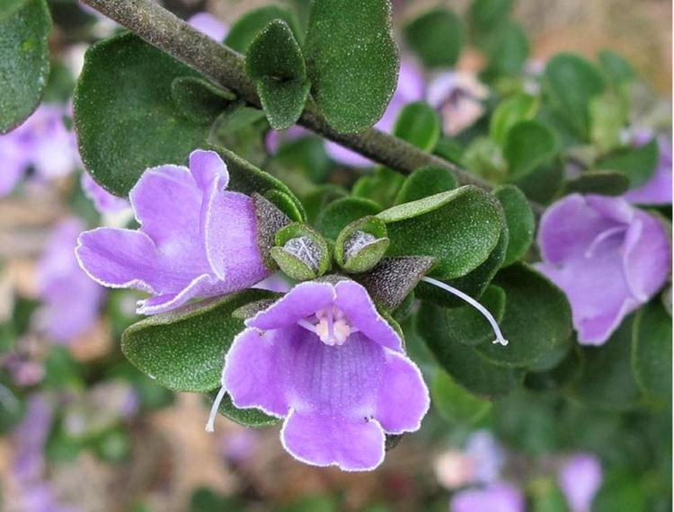
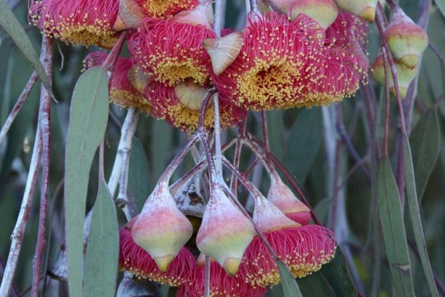

AHCPCM308
Identify and
Select Plants
Practise scientific names, common names, plant habits, life cycles and the features used to identify each plant.
Revision sets
Plant lists
Study the details first, then test recognition with a quiz or memory game.

Plant List 7 · 5 plants
Plant List 7
Aromatic foliage, colourful variegation and blue to purple flower displays.
StudyQuizMemoryOpen Plant List 7 →
Plant List 6 · 5 plants
Plant List 6
Climbers, a groundcover, a dwarf shrub and a tufted perennial.
StudyQuizMemoryOpen Plant List 6 →
Plant List 5 · 5 plants
Plant List 5
Bold flowers, textured foliage and contrasting shrub forms.
StudyQuizMemoryOpen Plant List 5 →
Plant List 4 · 5 plants
Plant List 4
Silver foliage, aromatic leaves, succulents and fringe flowers.
StudyQuizMemoryOpen Plant List 4 →
Plant List 3 · 5 plants
Plant List 3
Banksias, mint-bushes, native rosemary and wax flowers.
StudyQuizMemoryOpen Plant List 3 →
Plant List 2 · 5 plants
Plant List 2
Aromatic shrubs, distinctive foliage and native flowers.
StudyQuizMemoryOpen Plant List 2 →
Plant List 1 · 5 plants
Plant List 1
Weeping trees, prostrate shrubs, rounded foliage and aromatic plants.
StudyQuizMemoryOpen Plant List 1 →